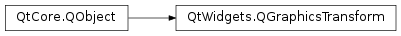

QGraphicsTransform¶
Inherited by: QGraphicsScale, QGraphicsRotation
Note
This class was introduced in Qt 4.6.
Detailed Description¶
The
PySide2.QtWidgets.QGraphicsTransformclass is an abstract base class for building advanced transformations on QGraphicsItems.As an alternative to
QGraphicsItem.transform,PySide2.QtWidgets.QGraphicsTransformlets you create and control advanced transformations that can be configured independently using specialized properties.
PySide2.QtWidgets.QGraphicsItemallows you to assign any number ofPySide2.QtWidgets.QGraphicsTransforminstances to onePySide2.QtWidgets.QGraphicsItem. EachPySide2.QtWidgets.QGraphicsTransformis applied in order, one at a time, to thePySide2.QtWidgets.QGraphicsItemit’s assigned to.
PySide2.QtWidgets.QGraphicsTransformis particularly useful for animations. WhereasQGraphicsItem.setTransform()lets you assign any transform directly to an item, there is no direct way to interpolate between two different transformations (e.g., when transitioning between two states, each for which the item has a different arbitrary transform assigned). UsingPySide2.QtWidgets.QGraphicsTransformyou can interpolate the property values of each independent transformation. The resulting operation is then combined into a single transform which is applied toPySide2.QtWidgets.QGraphicsItem.Transformations are computed in true 3D space using
PySide2.QtGui.QMatrix4x4. When the transformation is applied to aPySide2.QtWidgets.QGraphicsItem, it will be projected back to a 2DPySide2.QtGui.QTransform. When multiplePySide2.QtWidgets.QGraphicsTransformobjects are applied to aPySide2.QtWidgets.QGraphicsItem, all of the transformations are computed in true 3D space, with the projection back to 2D only occurring after the lastPySide2.QtWidgets.QGraphicsTransformis applied. The exception to this isPySide2.QtWidgets.QGraphicsRotation, which projects back to 2D after each rotation to preserve the perspective effect around the X and Y axes.If you want to create your own configurable transformation, you can create a subclass of
PySide2.QtWidgets.QGraphicsTransform(or any or the existing subclasses), and reimplement the pure virtualPySide2.QtWidgets.QGraphicsTransform.applyTo()function, which takes a pointer to aPySide2.QtGui.QMatrix4x4. Each operation you would like to apply should be exposed as properties (e.g., customTransform->setVerticalShear(2.5)). Inside you reimplementation ofPySide2.QtWidgets.QGraphicsTransform.applyTo(), you can modify the provided transform respectively.
PySide2.QtWidgets.QGraphicsTransformcan be used together withQGraphicsItem.setTransform(),QGraphicsItem.setRotation(), andQGraphicsItem.setScale().
-
class
PySide2.QtWidgets.QGraphicsTransform([parent=nullptr])¶ Parameters: parent – PySide2.QtCore.QObjectConstructs a new
PySide2.QtWidgets.QGraphicsTransformwith the givenparent.
-
PySide2.QtWidgets.QGraphicsTransform.applyTo(matrix)¶ Parameters: matrix – PySide2.QtGui.QMatrix4x4This pure virtual method has to be reimplemented in derived classes.
It applies this transformation to
matrix.See also
QGraphicsItem.transform()QMatrix4x4.toTransform()
-
PySide2.QtWidgets.QGraphicsTransform.update()¶ Notifies that this transform operation has changed its parameters in such a way that
PySide2.QtWidgets.QGraphicsTransform.applyTo()will return a different result than before.When implementing you own custom graphics transform, you must call this function every time you change a parameter, to let
PySide2.QtWidgets.QGraphicsItemknow that its transformation needs to be updated.
© 2018 The Qt Company Ltd. Documentation contributions included herein are the copyrights of their respective owners. The documentation provided herein is licensed under the terms of the GNU Free Documentation License version 1.3 as published by the Free Software Foundation. Qt and respective logos are trademarks of The Qt Company Ltd. in Finland and/or other countries worldwide. All other trademarks are property of their respective owners.